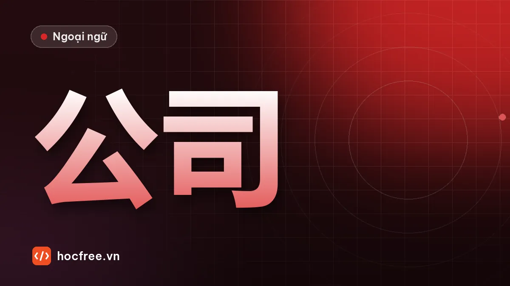

Tiếng Trung công sở cơ bản: công việc, đồng nghiệp, cuộc họp
Từ vựng chức vụ, bộ phận, công việc hằng ngày, mẫu câu giới thiệu công việc, hỏi tiến độ, báo bận, xin phép và hội thoại với đồng nghiệp.

Học xong bài này, bạn sẽ
- Giới thiệu công việc và bộ phận
- Trao đổi ngắn về công việc với đồng nghiệp
- Báo bận, xin phép, hẹn lịch họp
Nên học trước: Sở thích và thời gian rảnh
Nội dung bài viết
Nhiều người học tiếng Trung vì công việc: làm ở doanh nghiệp Trung Quốc, Đài Loan, hoặc phối hợp với chuyên gia Trung Quốc tại nhà máy. Bài này dạy từ vựng chức vụ, bộ phận, công việc hằng ngày, và những câu trao đổi ngắn với đồng nghiệp: hỏi tiến độ, báo bận, xin phép, hẹn họp.
Từ vựng
| Chữ Hán | Pinyin | Nghĩa | Ví dụ |
|---|---|---|---|
| 公司 | gōngsī | công ty | 我们公司 |
| 部门 | bùmén | bộ phận, phòng ban | 你在哪个部门？ |
| 经理 / 主管 | jīnglǐ / zhǔguǎn | giám đốc, quản lý / trưởng nhóm | 我的主管 |
| 同事 | tóngshì | đồng nghiệp | 新同事 |
| 员工 | yuángōng | nhân viên | 公司有五百个员工。 |
| 负责 | fùzé | phụ trách | 我负责质量检查。 |
| 检查 | jiǎnchá | kiểm tra | 检查产品 |
| 产品 | chǎnpǐn | sản phẩm | 新产品 |
| 生产 | shēngchǎn | sản xuất | 生产部 |
| 开会 | kāihuì | họp | 下午开会 |
| 报告 | bàogào | báo cáo | 写报告 |
| 完成 | wánchéng | hoàn thành | 今天能完成吗？ |
| 问题 | wèntí | vấn đề, câu hỏi | 有问题吗？ |
| 加班 | jiābān | tăng ca | 今天要加班。 |
| 忙 | máng | bận | 最近很忙。 |
| 最近 | zuìjìn | gần đây | 最近工作怎么样？ |
| 帮忙 | bāngmáng | giúp đỡ | 能帮个忙吗？ |
| 发 | fā | gửi | 发邮件给我 |
| 马上 | mǎshàng | ngay | 我马上去。 |
| 辛苦了 | xīnkǔ le | vất vả rồi | 大家辛苦了！ |
Âm Hán Việt hỗ trợ rất nhiều: 部门 bộ môn (bộ phận), 负责 phụ trách, 检查 kiểm tra, 产品 sản phẩm, 生产 sinh sản (sản xuất), 完成 hoàn thành, 问题 vấn đề.
Phát âm
- 经理 jīnglǐ: thanh 1 cao + thanh 3 thấp. 主管 zhǔguǎn là 3 + 3: zhú guǎn.
- 检查 jiǎnchá: ian đọc "iên". 产品 chǎnpǐn 3 + 3: chán pǐn.
- 辛苦 xīnkǔ: x mặt lưỡi, in (không phải ing).
Mẫu câu theo tình huống
Giới thiệu công việc
- 我在质量部工作，负责检查产品。 Tôi làm ở phòng chất lượng, phụ trách kiểm tra sản phẩm.
- 我是生产部的工程师。 Tôi là kỹ sư phòng sản xuất.
- 我在这家公司工作两年了。 Tôi làm ở công ty này hai năm rồi.
Hỏi và báo tiến độ
- 报告写完了吗？ Báo cáo viết xong chưa? → 写完了 / 还没写完，下午能完成。
- 今天能完成吗？ Hôm nay hoàn thành được không?
- 有什么问题吗？ Có vấn đề gì không? → 没问题。/ 有一个问题…
Báo bận, xin phép, nhờ giúp
- 不好意思，我现在有点儿忙，等一下可以吗？ Ngại quá, giờ mình hơi bận, lát nữa được không?
- 我可以早一点儿下班吗？ Tôi về sớm một chút được không?
- 你能帮我一个忙吗？ Bạn giúp mình một việc được không?
- 请把文件发给我。 Gửi tài liệu cho tôi nhé. (Câu 把 sẽ học kỹ ở HSK 3; ở đây học như mẫu cố định.)
Câu xã giao nơi làm việc
- 大家辛苦了！ Mọi người vất vả rồi! (sếp nói sau buổi làm việc)
- 我先走了，明天见！ Tôi về trước nhé, mai gặp!
- 最近工作忙吗？ Dạo này công việc bận không?
Hội thoại: hỏi tiến độ với trưởng nhóm
主管: 小黎，昨天的检查报告写完了吗？
Xiǎo Lí, zuótiān de jiǎnchá bàogào xiě wán le ma?
Tiểu Lê, báo cáo kiểm tra hôm qua viết xong chưa?
小黎: 还没写完。上午生产线有一个问题，我去工厂看了一下。
Hái méi xiě wán. Shàngwǔ shēngchǎnxiàn yǒu yí gè wèntí, wǒ qù gōngchǎng kàn le yíxià.
Chưa xong ạ. Sáng nay dây chuyền có một vấn đề, em xuống xưởng xem một chút.
主管: 什么问题？
Shénme wèntí?
Vấn đề gì?
小黎: 有一些产品的颜色不对。现在已经没问题了。
Yǒu yìxiē chǎnpǐn de yánsè bú duì. Xiànzài yǐjīng méi wèntí le.
Có một số sản phẩm sai màu. Giờ đã ổn rồi ạ.
主管: 好。报告今天能完成吗？
Hǎo. Bàogào jīntiān néng wánchéng ma?
Được. Báo cáo hôm nay hoàn thành được không?
小黎: 能，下班以前发给您。
Néng, xiàbān yǐqián fā gěi nín.
Được ạ, trước giờ tan làm em gửi anh.
主管: 辛苦了！
Xīnkǔ le!
Vất vả cho em rồi!
生产线 shēngchǎnxiàn: dây chuyền sản xuất. 一些 yìxiē: một số. 写完 xiě wán: viết xong (bổ ngữ kết quả, học ở giai đoạn 5). 以前 yǐqián: trước khi.
Luyện tập
Bài 1. Dịch: (1) Tôi làm ở phòng sản xuất. (2) Anh ấy phụ trách kiểm tra chất lượng. (3) Hôm nay tôi phải tăng ca. (4) Có vấn đề gì không? (5) Mọi người vất vả rồi!
Bài 2. Viết 4 câu trả lời trưởng nhóm khi họ hỏi 报告写完了吗？: (a) xong rồi, (b) chưa xong, chiều sẽ xong, (c) chưa xong vì máy tính có vấn đề, (d) xong rồi, đã gửi email.
Xem đáp án
Bài 1. (1) 我在生产部工作。 (2) 他负责质量检查。 (3) 今天我要加班。 (4) 有什么问题吗？ (5) 大家辛苦了！
Bài 2. (a) 写完了。 (b) 还没写完，下午能完成。 (c) 还没写完，因为我的电脑有问题。 (d) 写完了，我已经发邮件给您了。
Kiểm tra cuối bài
1. 负责 nghĩa là gì? Âm Hán Việt là gì?
2. Hỏi "Hôm nay hoàn thành được không?"
3. Câu xã giao khi ra về trước đồng nghiệp?
Xem đáp án
- Phụ trách; âm Hán Việt cũng là "phụ trách".
- 今天能完成吗？
- 我先走了，明天见！
Tổng kết và ôn tập
- Giới thiệu: 我在…部工作，负责…
- Tiến độ: …完了吗？还没…，…能完成。
- Xã giao: 辛苦了, 我先走了, 不好意思…
Bài ôn: viết đoạn 6–8 câu giới thiệu công việc và một ngày làm việc của bạn. Bài tiếp theo: gọi điện và hẹn gặp.
Bài tập thực hành
- Viết đoạn 6–8 câu giới thiệu công việc và một ngày làm việc của bạn.
- Đóng vai hỏi – đáp tiến độ công việc theo hội thoại mẫu, ghi âm.
Làm xong bài tập mới chuyển sang bài tiếp theo: đọc to, tự viết chữ Hán và tự chấm đáp án là cách duy nhất để nhớ lâu.